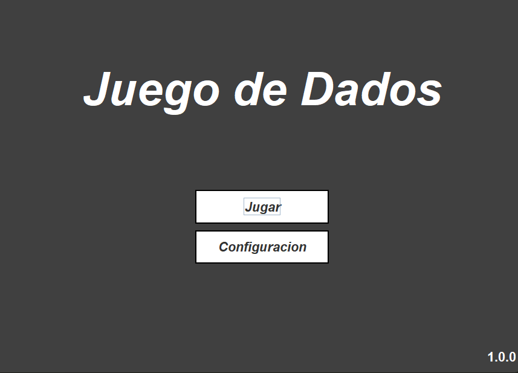
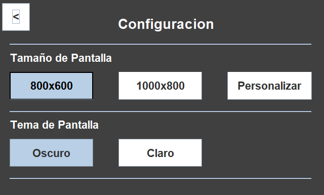
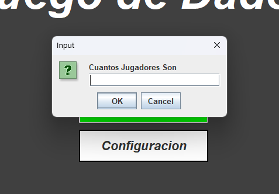
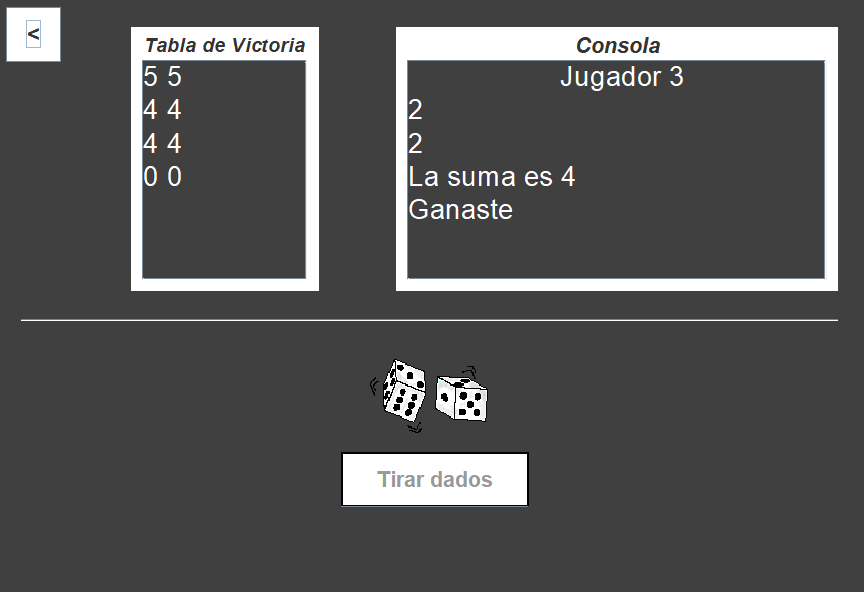
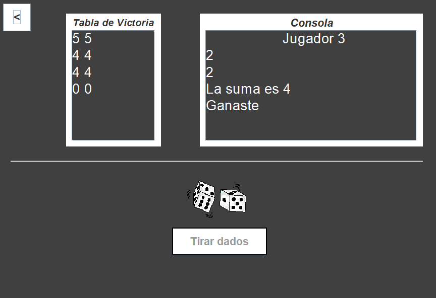
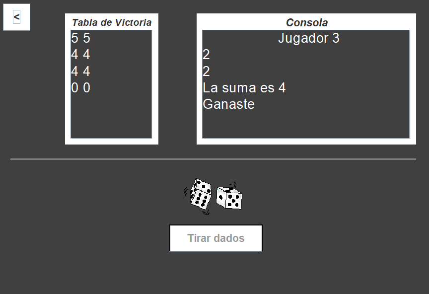

 


Información
Este fue mi Primer Proyecto en Java Hecho con Swing, Haciendo esto Aprendi a Usar Matrices, el Uso Basico de Probabilidades, Componentes de Swing, e Imagenes.
el Juego Consiste en que Cada Jugador Tira 2 Dados y para Ganar la Suma de los Dados debe ser 7 u 11, en Caso que No Acerte, la Suma que Salga Sera la Suma que
Tiene que Salir para Ganar, en Caso que no Salga se Repitira el Proceso Hasta que Acerte.
Quedaron Pendiente de Hacer Muchas Cosas que no Termine de Agregar por Hacer Otras Cosas pero Entre esas eran:
-
Pendientes:
- Cambiar Resolucion.
- Modo Claro.
- Agregar Sonidos.
- Hacerlo Mas Interactivo.